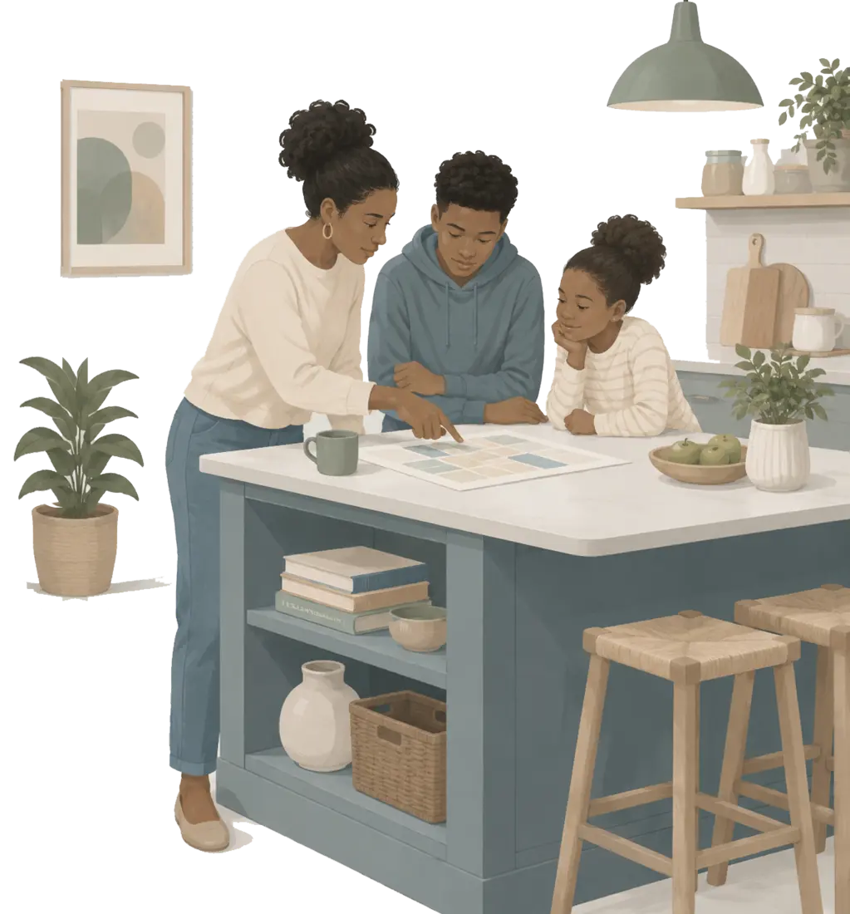
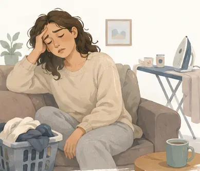
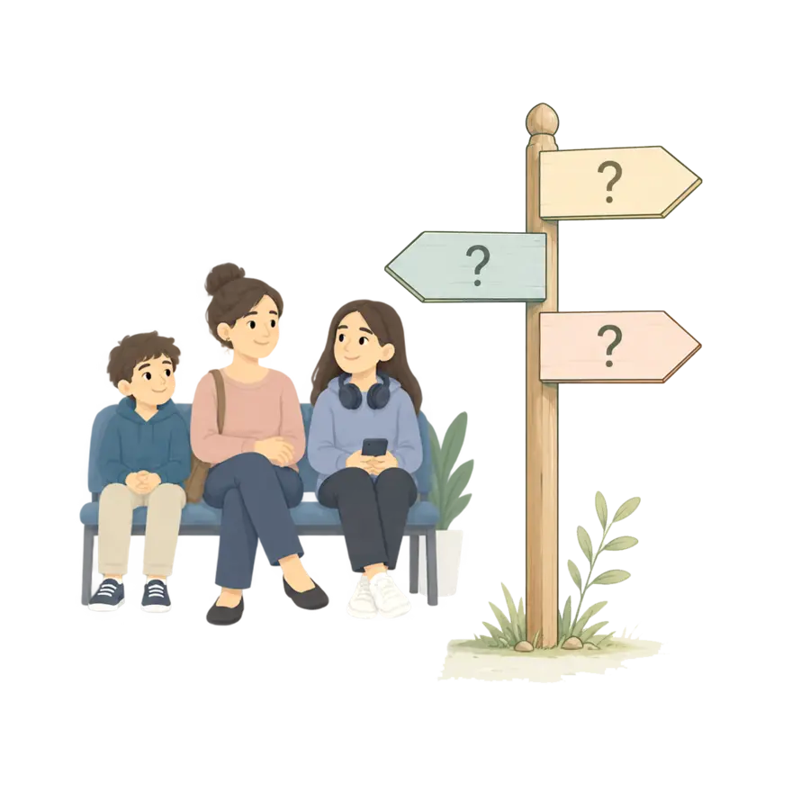

Attention & organisation
Losing track of instructions, forgetting things, difficulty starting or finishing tasks, becoming easily distracted or intensely absorbed.
CHILDREN & YOUNG PEOPLE
How can a teenager help themselves?
Understanding what may be going on can help families and young people weigh up whether an ADHD assessment could be useful.

MAKING SENSE OF WHAT YOU NOTICE
Children and teenagers can struggle with attention, organisation, impulsivity, emotions, friendships or school for many different reasons. This page can help families and young people make sense of what they are noticing, consider what support may already be available, and decide whether exploring ADHD assessment could be useful.
PATTERNS THAT MAY BE NOTICEABLE
If several of these feel familiar and are affecting everyday life, it may be worth talking to a healthcare professional about what could be going on and whether assessment is appropriate.
Losing track of instructions, forgetting things, difficulty starting or finishing tasks, becoming easily distracted or intensely absorbed.
Acting or speaking before thinking, interrupting, finding it hard to wait, or making quick decisions that are regretted later.
Needing to move or fidget, finding quiet activities difficult, seeming constantly on the go, or experiencing an internal sense of restlessness.
Becoming overwhelmed or frustrated quickly, having strong emotional reactions, or finding it hard to settle again after something goes wrong.
Interrupting, talking a lot, missing parts of conversations, forgetting plans, or finding friendships harder to manage because of impulsivity or inattention.
Uneven performance, losing or forgetting things, difficulty with homework, getting started or keeping track of tasks, or coping at school but struggling more at home.
ORDINARY MOMENTS
Not every difficulty is visible from the outside, and the same young person may look very different in different settings.

THE QUESTIONS FAMILIES ASK
Open the sections that are useful now. There is no need to work through them in order.
Yes. ADHD can look quite different at six, thirteen and seventeen. In younger children, adults may first notice difficulties with attention, following instructions, sitting still, waiting, remembering things, managing emotions or getting through everyday routines. Observations from more than one setting can be especially useful, because what happens at home may not look the same as what happens at school.
In teenagers, increasing independence, academic demands and more responsibility for organising their own time can make difficulties that were previously manageable much more noticeable. Some young people also become very good at compensating during the school day, only to feel exhausted or overwhelmed afterwards.
Approaching adulthood, it can help to think beyond diagnosis itself. Further education, university, employment, medication, independence and the move between children’s and adult services may all become relevant.
A diagnosis is not the only route to support. If a young person is struggling, it may be worth speaking to their teacher, form tutor, SENCO or relevant college support team about what has been noticed and whether practical changes could help.
Useful information might include examples of where difficulties occur, what seems to make them better or worse, attendance patterns, previous reports, learning needs and strategies that have already been tried. Support does not always have to wait for a diagnosis. Families and young people can ask what help or adjustments may be available based on the difficulties they are experiencing.
An assessment may be worth exploring when patterns are persistent, occur across important areas of life, cause significant difficulty or distress, and cannot easily be explained by one temporary situation.
That does not mean ADHD is necessarily the explanation. Sleep problems, anxiety, trauma, learning difficulties, physical health, bullying, family circumstances and other developmental or mental-health issues can sometimes produce overlapping signs. A good assessment should therefore look at the young person broadly rather than simply count symptoms.
There is no single identical process for every child or teenager. Depending on age, the question being considered and the service involved, assessment may draw on conversations with the young person and family, developmental history, questionnaires, school information, clinical observation and information from other professionals.
The aim should be to understand the whole picture rather than make the young person fit a predetermined conclusion.
The available route depends on where you live, the young person’s age and the services operating locally. Local NHS pathways may involve health, education or community services. In England, some families may also encounter Right to Choose pathways, while private assessment offers another route for those considering self-funded care.
Waiting times, referral requirements, assessment methods, medication arrangements and follow-up can differ considerably. Before choosing a route, check what happens after the assessment as carefully as what happens before it.
Waiting for an assessment does not mean nothing can happen in the meantime. You can talk to school or college, keep note of useful examples, identify situations that consistently create difficulty, and try practical changes that may make everyday life easier.
For example, a young person might benefit from clearer routines, written instructions, movement breaks, fewer distractions, help breaking larger tasks into manageable steps, reminders or extra support with organisation.
The aim is not to prove or treat ADHD before anyone knows whether it is present. It is simply to reduce difficulties that are already there.
If people are talking about getting you assessed, it might help to understand what they mean and what happens next. Remember, though: you are more than just “the person being assessed”. You are allowed to be involved in the process, ask questions, and understand what the assessment is for, what will happen, who will see the information, and what difference a diagnosis might make.
You may agree with the concerns adults have raised, disagree with them, or simply not know yet. All of those reactions are understandable. A good assessment should help people understand you better—not reduce you to a label or decide your future for you.

WHERE ARE YOU NOW?